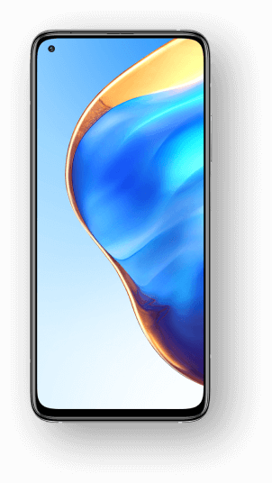

Xiaomi Mi 10T Pro.Креатив на максимум.Истинно флагманское качество.
- Тройная камера 108 Мп/64 Мп с ИИ
- Дисплей с частотой обновления 144 Гц и поддержкой технологий AdaptiveSync и TrueColor
- Qualcomm Snapdragon 865 с поддержкой 5G
- Аккумулятор ёмкостью 5000 мА·ч (стандартная) и поддержка 33-ваттной быстрой зарядки
Почувствуй вдохновение с новой камерой
- Основная камера: фотоматрица Samsung HMX 1/1,33”. Размер пикселя 1,6 мкм. Технология Super Pixel 4-в-1. Диафрагма f/1,69. 30-кратный цифровой зум. Оптическая стабилизация
- Сверхширокоугольная камера: угол обзора до 123°
- Макрообъектив: фокусировка на расстоянии 2 см
Создавай снимки с превосходной детализацией. Записывай видео кинематографического качества в разрешении 8К (7680x4320).
Инструкции в сторону, просто воспользуйся готовыми режимами, чтобы получить максимум от фото.
- Движущаяся толпа: фокусировка на объекте с размытием движущегося окружения
- Звездное небо: режим для съемки гипнотического звездного неба
- Масляная живопись: сглаживание объектов, что позволяет создать атмосферу рисунка на холсте
- Неоновый шлейф: создание шлейфов движущихся источников света
- Светопись: создание световых шлейфов небольшого объекта, движущегося в темноте
- Звездный шлейф: создание шлейфов на звездном небе
Флагманский дисплей Xiaomi 2020.
6,67" FHD+ DotDisplay
Безупречное качество картинки с заботой о вашем зрении
- Исключительно плавный
- Интеллектуальное потребление энергии
- TrueColor
- Улучшенная защита ваших глаз
Смартфон Mi 10T Pro оснащен лучшим дисплеем компании Xiaomi с предельно высокой частотой обновления 144 Гц (144 кадра в секунду). Невероятная плавность пользовательского интерфейса позволяет уменьшить нагрузку на глаза, особенно во время гейминга
и скроллинга. Также гаджет обладает высокими стандартами для гейминга. Благодаря сверхнизкой задержке и минимальному времени отклика ваша реакция становится быстрее и победа будет точно за вами.
- Просмотр фильмов и сериалов: 48/50 Гц
- Просмотр видео онлайн: 30/60 Гц
- Прокрутка: до 144Гц
- В играх: до 144Гц
Смартфон оснащен технологией AdaptiveSync, что позволяет автоматически настраивать частоту обновления экрана для каждого приложения в диапазоне от 30 до 144 Гц. Максимальная плавность и максимальная энергоэффективность. Уменьшение энергопотребления
на 8 % после 6 часов активного использования.
Надежность и комфорт дисплея:
- Датчики освещенности с углом обзора 360°
- Дневной режим 3.0
- Дисплей с низким уровнем синего излучения, сертифицированный TÜV Rheinland
- Технология MEMC: плавное воспроизведение контента с низкой частотой кадров для большей четкости отображения быстрых движений
- Широкий цветовой охват ( Поддержка DCI-P3. ): стандарт киноиндустрии, обеспечивающий более широкий цветовой охват в сравнении с sRGB. Невероятно реалистичные визуальные ощущения
- Технология TrueColor ( JNCD≈0,39 Delta E≈0,63 ): передовая технология управления цветом, настройка экрана происходит покадрово, что значительно повышает точность цветопередачи

Производительность процессора на уровне 5G
На борту: Qualcomm Snapdragon 865. Это ведущий 5G-чипсет 2020 года. Улучшенная производительность ЦП, графического ускорителя и нейронного модуля.
- 8 Гб LPDDR5 в максимальной конфигурации
- 256 Гб встроенной памяти UFS 3.1 в максимальной конфигурации
- Поддержка большого количества 5G-диапазонов
- Поддержка Wi-Fi 6
Заряжайте девайс 33-ваттной быстрой зарядкой по проводу. Аккумулятор ёмкостью 5000 мА·ч Xiaomi Mi 10T Pro получил гибридную зарядку, объединяющую в себе два метода: инновационный метод параллельной зарядки MMT (подача тока из центра аккумулятора
для использования двух параллельных маршрутов для одновременной зарядки) и технологию Mi Fast Charge. 100% всего за 60 минут.
Совершенный дизайн
Классика черного. Стеклянная задняя панель сияет как керамика.
- Космический черный
- Лунный серебряный
- Арктический синий
Безграничные возможности
Классика черного. Стеклянная задняя панель сияет как керамика.
- X-осевой линейный мотор
- Многофункциональный NFC-модуль
- Технология LiquidCool
- Встроенный в кнопку питания сканер отпечатков пальцев
- Два сверхлинейных динамика
- 3D-запись